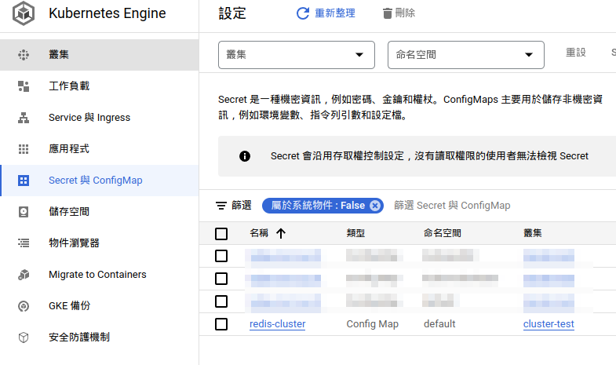
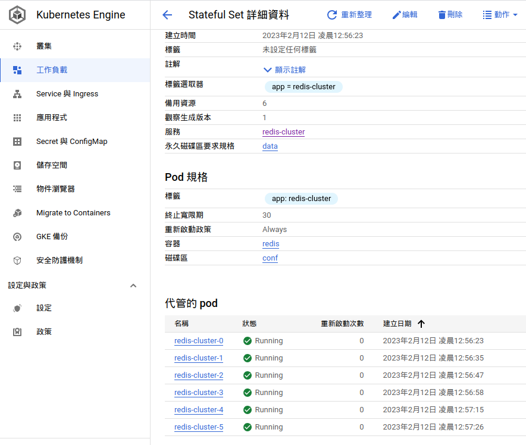
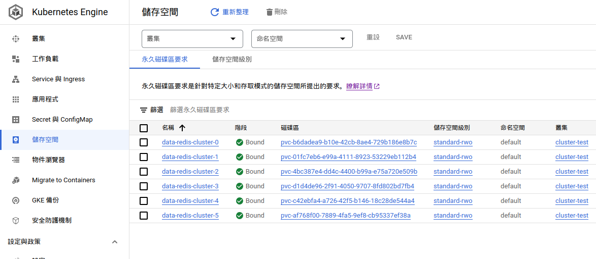
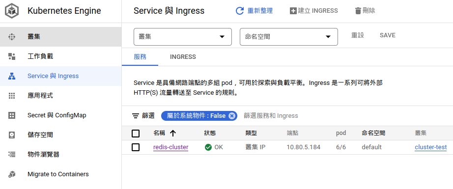

# 環境
在 Google Kubernetes Engine (GKE) 內建置 Redis 叢集
- GKE node: g1-small * 2 (version 1.24.8-gke.2000)
- Redis 7
# 建立 ConfigMap
建立給 redis 節點使用的共用設定檔，名稱為 redis-cluster，之後建立為 volume 讓每個容器使用
apiVersion: v1
kind: ConfigMap
metadata:
name: redis-cluster
data:
update-node.sh: |
#!/bin/sh
REDIS_NODES="/data/nodes.conf"
sed -i -e "/myself/ s/[0-9]\{1,3\}\.[0-9]\{1,3\}\.[0-9]\{1,3\}\.[0-9]\{1,3\}/${POD_IP}/" ${REDIS_NODES}
exec "$@"
redis.conf: |+
cluster-enabled yes
cluster-require-full-coverage no
cluster-node-timeout 15000
cluster-config-file /data/nodes.conf
cluster-migration-barrier 1
appendonly yes
protected-mode no建立成功後可以在 GKE 界面的 Secret與ConfigMap 內看到新增的 redis-cluster

# 建立 StatefulSet
- StatefulSet 需要使用 Kubernetes v1.9 或之後的版本才支援
- .spec.selector.matchLabels 要跟 .spec.template.metadata.labels 相同
- .spec.replicas 至少要 6 個，redis cluster 至少要 6 個節點; 3 個 master, 3 個 slave, 不過還沒查到為什麼。
參考文章在 .spec.selector.template.spec.containers.volumes.defaultMode 是寫 0755(八進位)，但是我在 Lens 內執行時會出現下面錯誤，所以改成十進位的 493
create Pod redis-cluster-0 in StatefulSet redis-cluster failed error: Pod "redis-cluster-0" is invalid: [spec.volumes[1].configMap.defaultMode: Invalid value: 755: must be a number between 0 and 0777 (octal), both inclusive, spec.containers[0].volumeMounts[0].name: Not found: "conf"]
完整 yaml
apiVersion: apps/v1
kind: StatefulSet
metadata:
name: redis-cluster
spec:
serviceName: redis-cluster
replicas: 6 # by default is 1
selector:
matchLabels:
app: redis-cluster # has to match .spec.template.metadata.labels
template:
metadata:
labels:
app: redis-cluster # has to match .spec.selector.matchLabels
spec:
containers:
- name: redis
image: redis:7
ports:
- containerPort: 6379
name: client
- containerPort: 16379
name: gossip
command: ["/conf/update-node.sh", "redis-server", "/conf/redis.conf"]
env:
- name: POD_IP
valueFrom:
fieldRef:
fieldPath: status.podIP
volumeMounts:
- name: conf
mountPath: /conf
readOnly: false
- name: data
mountPath: /data
readOnly: false
volumes:
- name: conf
configMap:
name: redis-cluster
# defaultMode: 0755
defaultMode: 493
volumeClaimTemplates:
- metadata:
name: data
spec:
accessModes: [ "ReadWriteOnce" ]
resources:
requests:
storage: 1Gi執行完等一下
之後可以在 GKE 的 工作負載 內看到 6 個 Pod 建立完成

儲存空間 也會產生 6 個 PVC (PersistentVolumeClaim)

或者使用指令查看
$ kubectl get pods
NAME READY STATUS RESTARTS AGE
redis-cluster-0 1/1 Running 0 8m31s
redis-cluster-1 1/1 Running 0 8m19s
redis-cluster-2 1/1 Running 0 8m7s
redis-cluster-3 1/1 Running 0 7m56s
redis-cluster-4 1/1 Running 0 7m39s
redis-cluster-5 1/1 Running 0 7m28s$ kubectl get pv
NAME CAPACITY ACCESS MODES RECLAIM POLICY STATUS CLAIM STORAGECLASS REASON AGE
pvc-01fc7eb6-e99a-4111-8923-53229eb112b4 1Gi RWO Delete Bound default/data-redis-cluster-1 standard-rwo 21m
pvc-4bc387e4-dd4c-4400-b99a-e75a720e509b 1Gi RWO Delete Bound default/data-redis-cluster-2 standard-rwo 21m
pvc-af768f00-7889-4fa5-9ef8-cb95337ef38a 1Gi RWO Delete Bound default/data-redis-cluster-5 standard-rwo 20m
pvc-b6dadea9-b10e-42cb-8ae4-729b186e8b7c 1Gi RWO Delete Bound default/data-redis-cluster-0 standard-rwo 21m
pvc-c42ebfa4-a726-42f5-b146-18c28de544a4 1Gi RWO Delete Bound default/data-redis-cluster-4 standard-rwo 20m
pvc-d1d4de96-2f91-4050-9707-8fd802bd7fb4 1Gi RWO Delete Bound default/data-redis-cluster-3 standard-rwo 21m# 建立 Service
apiVersion: v1
kind: Service
metadata:
name: redis-cluster
spec:
ports:
- port: 6379
targetPort: 6379
name: client
- port: 16379
targetPort: 16379
name: gossip
selector:
app: redis-cluster執行完檢查 Service redis-cluster 是否成功建立

$ kubectl get service redis-cluster
NAME TYPE CLUSTER-IP EXTERNAL-IP PORT(S) AGE
redis-cluster ClusterIP 10.80.5.184 <none> 6379/TCP,16379/TCP 2m50s# 建立 Redis 叢集
參考的文章使用的指令如下
kubectl exec -it redis-cluster-0 -- redis-cli --cluster create --cluster-replicas 1 $(kubectl get pods -l app=redis-cluster -o jsonpath='{range.items[*]}{.status.podIP}:6379 ')實際實行結果會出現如下錯誤
kubectl exec -it redis-cluster-0 -- redis-cli --cluster create --cluster-replicas 1 $(kubectl get pods -l app=redis-cluster -o jsonpath='{range.items[*]}{.status.podIP}:6379 ')
查看原因是 kubectl get pods -l app=redis-cluster -o jsonpath='{range.items[*]}{.status.podIP} 會多一組空的 IP
$ kubectl get pods -l app=redis-cluster -o jsonpath='{range.items[*]}{.status.podIP}:6379 '
10.76.2.30:6379 10.76.1.32:6379 10.76.2.31:6379 10.76.1.33:6379 10.76.2.32:6379 10.76.1.34:6379 :6379 可以使用下面指令查看比較明顯
$ kubectl get pods -l app=redis-cluster -o jsonpath='{range.items[*]}{.status.podIP}:6379{"\n"}'
10.76.2.30:6379
10.76.1.32:6379
10.76.2.31:6379
10.76.1.33:6379
10.76.2.32:6379
10.76.1.34:6379
:6379修改後指令如下
kubectl exec -it redis-cluster-0 -- redis-cli --cluster create --cluster-replicas 1 $(kubectl get pods -o=jsonpath='{range .items[*]}{.status.podIP}:6379 {end}')Can I set the above configuration? 輸入 yes，執行結果可以看到建立了 3 個 redis master 節點，3 個 slave 節點。
執行結果
$ kubectl exec -it redis-cluster-0 -- redis-cli --cluster create --cluster-replicas 1 $(kubectl get pods -o=jsonpath='{range .items[*]}{.status.podIP}:6379 {end}')
>>> Performing hash slots allocation on 6 nodes...
Master[0] -> Slots 0 - 5460
Master[1] -> Slots 5461 - 10922
Master[2] -> Slots 10923 - 16383
Adding replica 10.76.2.32:6379 to 10.76.2.30:6379
Adding replica 10.76.1.34:6379 to 10.76.1.32:6379
Adding replica 10.76.1.33:6379 to 10.76.2.31:6379
M: 05ecf3912ed0a5517ab74fd17f81d02a3314a833 10.76.2.30:6379
slots:[0-5460] (5461 slots) master
M: 9da23852cfd0a7489c2f53ec743363e48dea378b 10.76.1.32:6379
slots:[5461-10922] (5462 slots) master
M: 379127b6974b6acc59e5fb194361749e682bdc97 10.76.2.31:6379
slots:[10923-16383] (5461 slots) master
S: 5105cdd3a6637e3844316c557f81c68b231703e7 10.76.1.33:6379
replicates 379127b6974b6acc59e5fb194361749e682bdc97
S: dde0a9ef27e044cd124814529305732c9ab0d9dd 10.76.2.32:6379
replicates 05ecf3912ed0a5517ab74fd17f81d02a3314a833
S: 8a89a45f3161b606b13f1ede95fec240de2bcf9d 10.76.1.34:6379
replicates 9da23852cfd0a7489c2f53ec743363e48dea378b
Can I set the above configuration? (type 'yes' to accept): yes
>>> Nodes configuration updated
>>> Assign a different config epoch to each node
>>> Sending CLUSTER MEET messages to join the cluster
Waiting for the cluster to join
>>> Performing Cluster Check (using node 10.76.2.30:6379)
M: 05ecf3912ed0a5517ab74fd17f81d02a3314a833 10.76.2.30:6379
slots:[0-5460] (5461 slots) master
1 additional replica(s)
S: dde0a9ef27e044cd124814529305732c9ab0d9dd 10.76.2.32:6379
slots: (0 slots) slave
replicates 05ecf3912ed0a5517ab74fd17f81d02a3314a833
S: 5105cdd3a6637e3844316c557f81c68b231703e7 10.76.1.33:6379
slots: (0 slots) slave
replicates 379127b6974b6acc59e5fb194361749e682bdc97
M: 379127b6974b6acc59e5fb194361749e682bdc97 10.76.2.31:6379
slots:[10923-16383] (5461 slots) master
1 additional replica(s)
M: 9da23852cfd0a7489c2f53ec743363e48dea378b 10.76.1.32:6379
slots:[5461-10922] (5462 slots) master
1 additional replica(s)
S: 8a89a45f3161b606b13f1ede95fec240de2bcf9d 10.76.1.34:6379
slots: (0 slots) slave
replicates 9da23852cfd0a7489c2f53ec743363e48dea378b
[OK] All nodes agree about slots configuration.
>>> Check for open slots...
>>> Check slots coverage...
[OK] All 16384 slots covered.
# 驗證 Redis 叢集
kubectl exec -it redis-cluster-0 -- redis-cli cluster info執行結果
$ kubectl exec -it redis-cluster-0 -- redis-cli cluster info
cluster_state:ok
cluster_slots_assigned:16384
cluster_slots_ok:16384
cluster_slots_pfail:0
cluster_slots_fail:0
cluster_known_nodes:6
cluster_size:3
cluster_current_epoch:6
cluster_my_epoch:1
cluster_stats_messages_ping_sent:273
cluster_stats_messages_pong_sent:278
cluster_stats_messages_sent:551
cluster_stats_messages_ping_received:273
cluster_stats_messages_pong_received:273
cluster_stats_messages_meet_received:5
cluster_stats_messages_received:551
total_cluster_links_buffer_limit_exceeded:0
for x in $(seq 0 5); do echo "redis-cluster-$x"; kubectl exec redis-cluster-$x -- redis-cli role; echo; done執行結果
$ for x in x"; kubectl exec redis-cluster-$x -- redis-cli role; echo; done
redis-cluster-0
master
504
10.76.2.32
6379
504
redis-cluster-1
master
504
10.76.1.34
6379
504
redis-cluster-2
master
490
10.76.1.33
6379
490
redis-cluster-3
slave
10.76.2.31
6379
connected
490
redis-cluster-4
slave
10.76.2.30
6379
connected
504
redis-cluster-5
slave
10.76.1.32
6379
connected
504
# YAML 檔案
# 參考
Deploying Redis Cluster on Top of Kubernetes February 22, 2019 | By: Rancher Admin